# 图表示
经典的信息处理技术仅适用于来自于欧式空间的数据，例如1维时域的语音、2维空间域的图像、3维空间域的点云等。如果数据来自非欧空间或具备非欧的几何结构呢？
- 欧式空间是刚性的，我们从同等采样的空间中感测每个数据，可以用向量、矩阵、张量等形式表示。
- 非欧式空间没有常规的采样点，所有采样点和连接可能是任意的。传统的表示形式和工具不在适用！
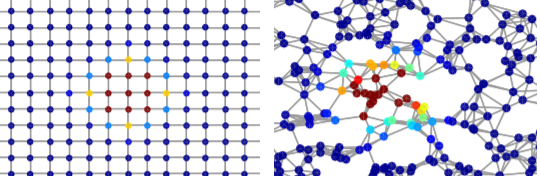
欧式和非欧的几何表示同样具备顶点和边。因此图数据成为更一般的表示形式。
# 图嵌入学习
一般而言，不规则的图结构不具备平移不变性。每一个节点的周围结构可能都是独一无二的，像是卷积或者池化这样对于张量数据十分自然的操作，对于图结构却是难以直接定义的，这就是图网络所研究的主要问题：如何对图进行学习？
从图里得出特征，首先需要得到图的嵌入表示（graph embedding）。
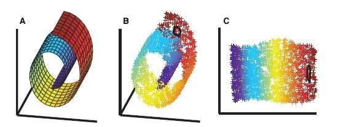
一幅图像（image）所抽取的特征图（features map）里每个元素，可以理解为图像上的对应点的像素及周边点的像素的加权和。
同样，图（graph）所抽取的特征图（也就是特征向量）里的每个元素，也可以理解为对应节点的向量与周边节点的向量的加权和。
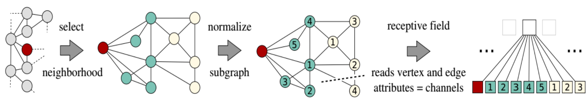
# 图嵌入学习与矩阵分解
下面是三种典型的图嵌入学习模型，可以学会表示图节点，边缘或低维向量中的子图。
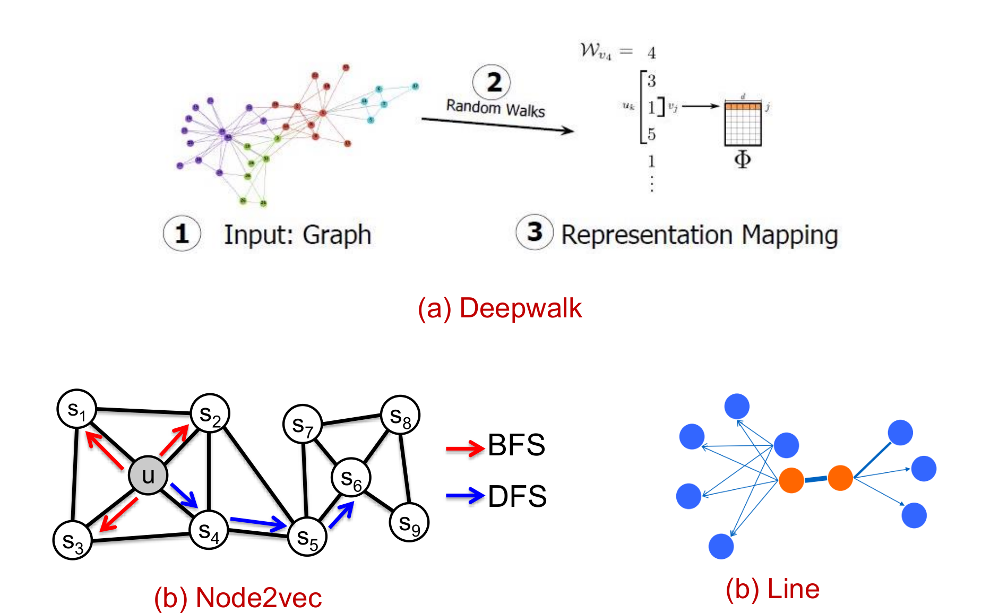
这些经典的图网络嵌入算法从数学本质上可视为矩阵分解的推广。
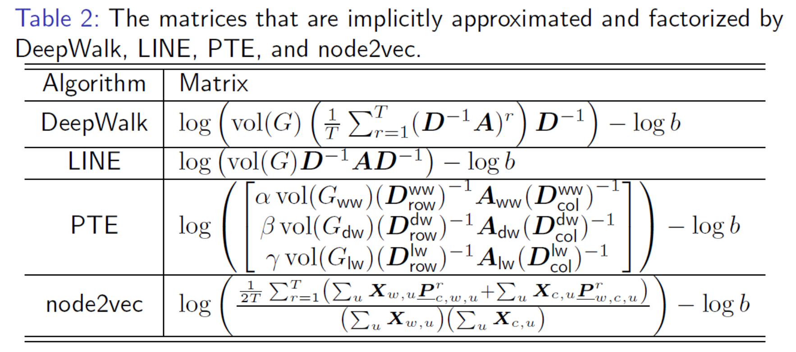
因此，基于图嵌入的矩阵分解、矩阵预处理和矩阵优化等数学问题仍值得研究
# 图神经网络
深度学习为什么成功？
- 快速发展的计算资源和大量训练数据的可用性
- 深度学习从欧氏空间数据中提取潜在表示的有效性
由以往使用欧式数据深度学习转变为使用非欧式数据的方法，借鉴 CNN、RNN 等神经网络的思想，定义和设计了用于处理图数据的特殊网络——图神经网络。因此，我们可以认为
图神经网络 = 深度学习 + 图论
下面是图神经网络的主要分支
图卷积网络(Graph Convolution Networks)
将卷积运算从传统数据（例如图像）推广到图数据，其核心是聚集特征信息形成邻居，通过非线性转换生成节点的新表示。
- 基于频谱(Spectral-based GCNs)：从图信号处理的角度引入滤波器来定义图卷积，可去除噪声。
- 基于空间(Spatial-based GCNs)：从邻域聚合特征信息，节点的图池化可与图卷积层交错，将图粗化为高级子结构。
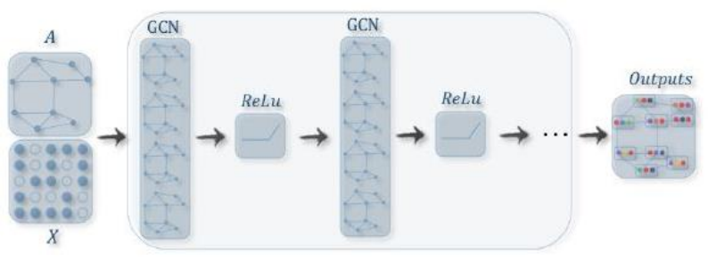
图卷积网络是许多复杂图神经网络模型的基础，其数学本质是一个低通滤波器。在信号与系统中，我们可以将信号转换到频域，通过频率响应函数滤波，再将信号转换到时域完成滤波的操作。
图注意力网络(Graph Attention Networks)
注意力机制如今已经被广泛地应用到了基于序列的任务中，优点是放大数据中最重要的部分的影响。图神经网络在聚合过程中使用注意力，整合多个模型的输出，并生成面向重要目标的随机行走。
图自编码器(Graph Auto-Encoders)
利用神经网络结构将图的顶点表示为低维向量，其本质是图嵌入。利用多层感知机作为编码器来获取节点嵌入，其中解码器重建节点的邻域统计信息。
图生成网络(Graph Generative Networks)
给定一组观察到的图的情况下生成新的图
图时空网络(Graph Spatial-temporal Networks)
同时捕捉时空图的时空相关性
# 图神经网络的应用
- 计算机视觉
- 视觉推理：提取给定图像中的语义区域，这些语义区域与问题一并当做图中的节点，用GNN 模型中进行推理学习
- 少样本或零样本学习：充分挖掘样本之间的潜在关联信息（比如标签语义关联、潜层表达关联）
- 3D 视觉
- 点云学习：学习表征物体语义的潜在流形结构。几何学习与 GNN 在一些场景如点云分割、点云识别等正在深度融合
- 自然语言处理
- 关系推理：阅读理解、实体识别与关系抽取、依存句法分析中都有应用。
- 科研场景
- 用图来表征分子、DNA和电路等，将GNN与其他领域交叉，如蛋白质相互作用点预测、化学反应产物预测、电路电磁特性仿真计算等。
# 流形表示
同样受限与欧式空间表征的缺陷，除了结点和边的不规律外，欧式几何可能带来的潜在错误：
- 不完备：欧式几何不能保证测地线上的点约束在潜在的流形上，导致后续操作（比如插值）会带来无法接受的结果。下图对比了欧式距离 (蓝色虚直线) 和黎曼距离 (红色实曲线)
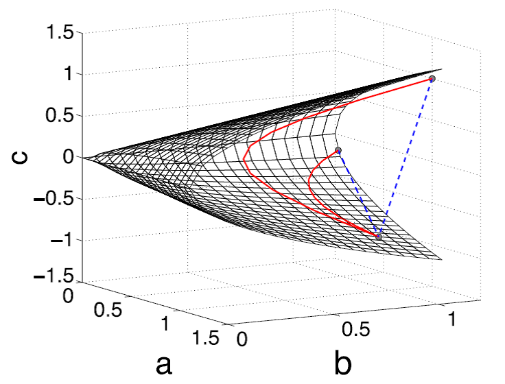
- 膨胀效应：样本协方差矩阵用极大似然估计计算时，较大的特征值往 往被高估而较小的特征值往往被低估，这也可以看做膨胀效应的结果。
基于流形的信号表征可提供更真实的度量信息。
# 流形学习
通常而言，流形学习是机器学习、模式识别中的一种方法，在维数约简方面具有广泛的应用。
- 将高维的数据映射到低维，使该低维的数据能够反映原高维数据的某些本质结构特征
- 流形假设，即某些高维数据，实际是一种低维的流形结构嵌入在高维空间中
- 将其映射回低维空间中，揭示其本质
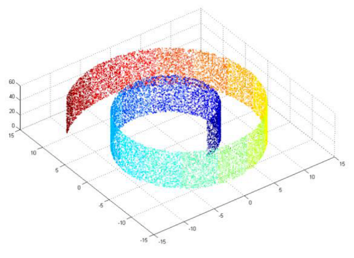
对瑞士卷数据集进行降维可视化，发现
- 基于流形的降维可以将瑞士卷拉直而不会发生颜色重叠的现象
- 基于欧式的降维对具有潜在非线性结构的数据处理效果并不理想
这体现了流形表征的优势。
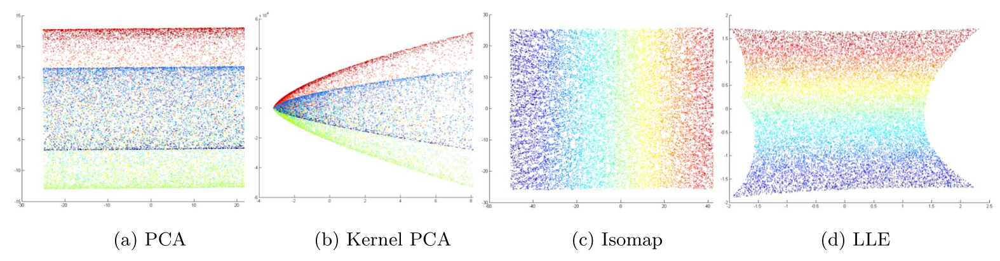
# 流形学习在信号分类中的应用
信号协方差矩阵作为二阶统计量具有鉴别信息。为什么对信号协方差矩阵降维？
- 高维协方差矩阵会导致维数灾难！
- 协方差阵位于一类对称正定流形上
用黎曼几何的工具来处理协方差矩阵可克服传统欧式方法的局限。
浅层学习
基于子流形的降维：保留原始流形的几何结构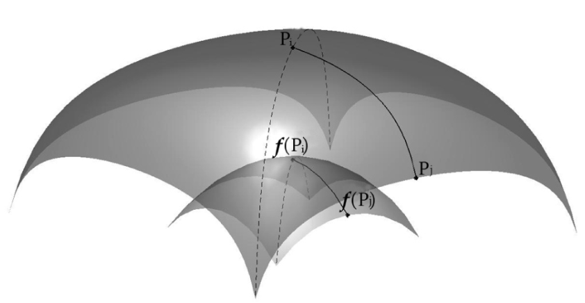
基于相似性的降维：构建更具鉴别能力的低维流形：
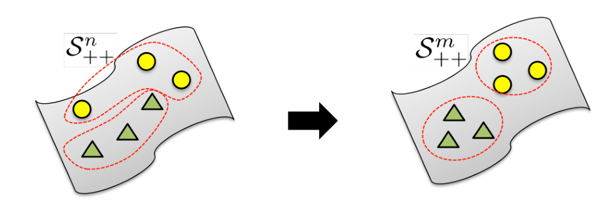
深层学习
构建符合流形性质的网络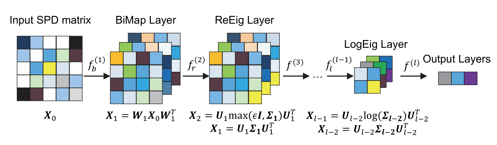
流形到流形的神经网络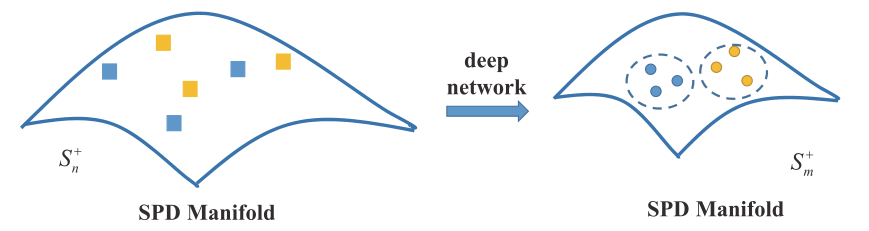
# 流形网络的局限
- 在流形结构的约束下设计特征提取的操作，但这些运算没有一个统一的标准
- 流形度量的计算设计矩阵的分解，这导致计算量大，且收敛性差
- 流形网络和图网络都容易过拟合，泛化能力有待提高